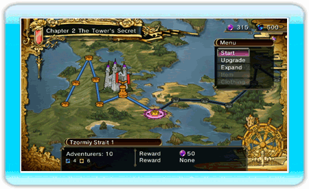
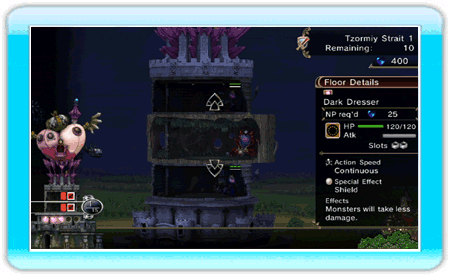
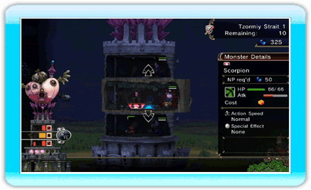
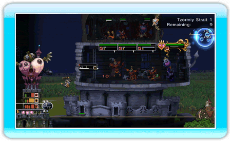
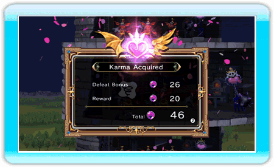

10 |
Conquering the World |
 |
The world of My Life as a Darklord is broadly divided into two parts: the world map and the stages where the gameplay takes place. Before you can take over the world, you'll want to study up on everything you can about both parts.
This is where you select a stage to invade before kicking off the battle. It's also where you can upgrade your monsters, expand your tower, and view the items in your possession. If you have any clothing for Mira, you can change her outfit on the world map. (This option won't be selectable if you haven't acquired any clothing for her yet.)
Select "Start" to begin a stage. In each stage, you'll use your Negative Power (NP) to place floors and summon monsters to your tower. You can also use NP to raise the level of the monsters you summon if you have upgraded those monsters on the world map.
1. Putting Your Plan Into Action Select a stage to conquer on the world map to start the battle.  2. Dispatch the Adventurers Use your NP to add floors to your tower.  After placing floors, use your NP to summon monsters to the tower.  You'll acquire more NP when your monsters or floor Artifacts take down adventurers.  3. Earn Karma with Victory If you win the battle, you will take over the stage and receive a Karma bonus.  4. Expand Your Tower, Upgrade Your Monsters Use the Karma you acquire to expand your tower and upgrade your monsters on the world map.
|

 |
 |
 |